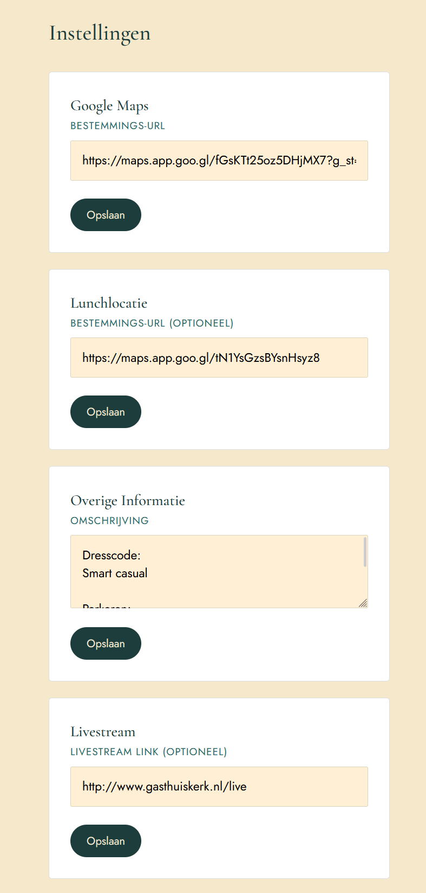

Trouwsite
A wedding website built for my girlfriend's mom's wedding, with a guest photo wall, a curated slideshow gallery, and a full admin panel to manage every detail of the day.
About this project
When my girlfriend's mom got engaged, I offered to build the wedding website myself instead of using an off-the-shelf template. I wanted the guests to be part of the day, not just spectators, so the site is built around collecting and sharing memories in real time, alongside all the practical information guests need.
The frontend is built with plain HTML, CSS, and JavaScript, kept lightweight so it loads quickly on a phone in the middle of a wedding venue. The backend runs on Java and Spring Boot, handling photo uploads, moderation, and all the content the couple can manage themselves through the admin panel.
A big focus was the guest photo flow: on the day itself, guests can upload photos straight from their phones. Nothing goes live automatically, an admin reviews every upload first, so the gallery stays a nice surprise instead of an unmoderated photo dump.
Everything that could change, the date, the ceremony time, the upload window, the venue, the lunch location, the livestream link, and the gift wishlist, is editable from the admin panel, so the couple never had to ask me to change a line of code.
Key highlights
- Guest gallery with photos displayed in polaroid-style frames
- Admin-curated gallery with a reorderable slideshow
- Wedding-day photo uploads with admin approval before publishing
- Full admin panel to manage every editable detail of the day
- Java and Spring Boot backend behind a lightweight HTML, CSS and JS frontend
- Built as a gift, entirely solo, for a wedding I care about
Site Features
What makes Trouwsite unique
Guest Gallery
Approved guest photos are displayed in polaroid-style frames, giving the page a warm, hand-picked scrapbook feel instead of a generic photo grid.
Curated Gallery
A separate gallery where admins upload the couple's own photos and set the exact order they appear in, which then plays as an automatic slideshow on the site.
Guest Photo Uploading
On the wedding day itself, guests can upload photos straight from their phones during a set time window. Every upload waits for admin approval before it can appear on the site.
Full Admin Panel
Admins can add photos to both galleries, approve or reject guest uploads, and edit the wedding date, ceremony time, the upload window for guest photos, the venue, and the lunch location.
Livestream & Wishlist Links
The admin panel also controls the URL to the ceremony's live stream and the URL to the couple's gift wishlist, so guests who can't attend in person can still watch and contribute.
Lightweight & Mobile-first
The frontend is plain HTML, CSS, and JavaScript so it loads fast on any guest's phone, wherever the venue's signal happens to be that day, with a Java and Spring Boot backend doing the work behind it.
Tech Stack
Tools and technologies behind Trouwsite
HTML & CSS
Structure & StylingHand-written markup and styling, focused on a clean, romantic look that stays fast and readable on mobile devices.
JavaScript
Client-side LogicPowers the slideshow, the photo upload form, and the guest gallery, talking to the Spring Boot backend to fetch and submit content.
Java
Backend LanguageHandles photo storage, the guest upload approval workflow, and all the settings the admin panel exposes.
Spring Boot
Backend FrameworkServes the REST endpoints behind both galleries, the guest upload flow, and the admin panel that ties all the wedding-day details together.
Git / GitHub
Version ControlFull version history of the project, kept private given the personal, family nature of the site.
Screenshots
Click any image to view full size. Some areas are blurred for privacy.


{kind=link}

Challenges & Learnings
Challenges I faced
- Building a moderation queue so guest uploads only go public after an admin approves them, without slowing down uploads on the day itself.
- Designing an admin panel flexible enough to change dates, times, locations, and links without ever touching code again.
- Handling photo uploads and storage reliably from many guests' phones at once, on the day it mattered most.
- Working with a real, fixed deadline, a wedding date does not move, so there was no room to slip the schedule.
What I learned
- Building a full REST backend with Java and Spring Boot from scratch, including endpoints for uploads, approvals, and site settings.
- Designing content moderation flows, deciding what guests can do directly versus what needs admin review first.
- Keeping a frontend intentionally simple, plain HTML, CSS, and JavaScript were enough, and easier to hand off than a full framework.
- Building software for someone I care about, and seeing exactly how it gets used on the day, is a different kind of rewarding than a school project.
Curious about the project?
Built as a personal gift for a family wedding. Feel free to reach out if you'd like to know more about how it works.